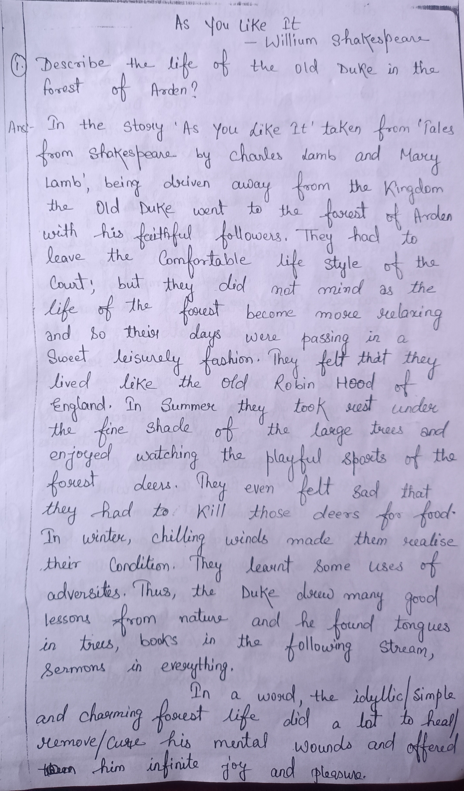
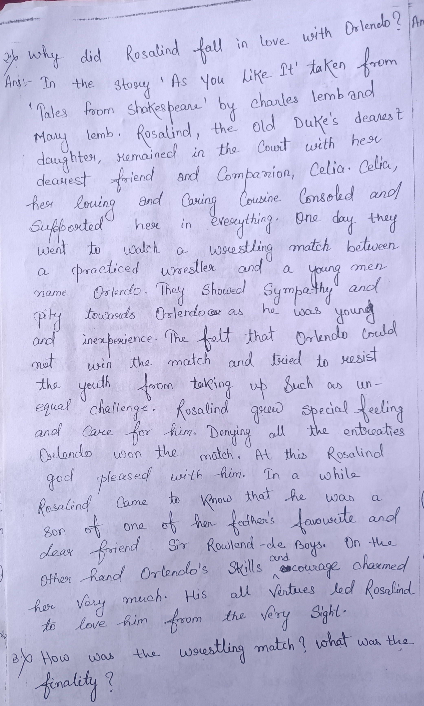
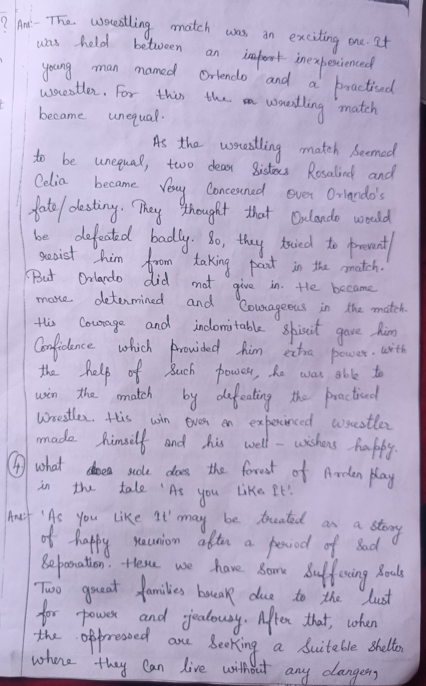
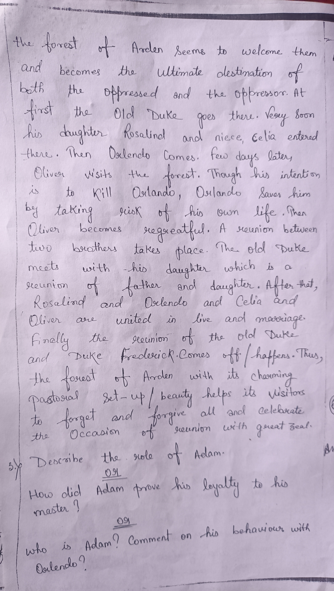
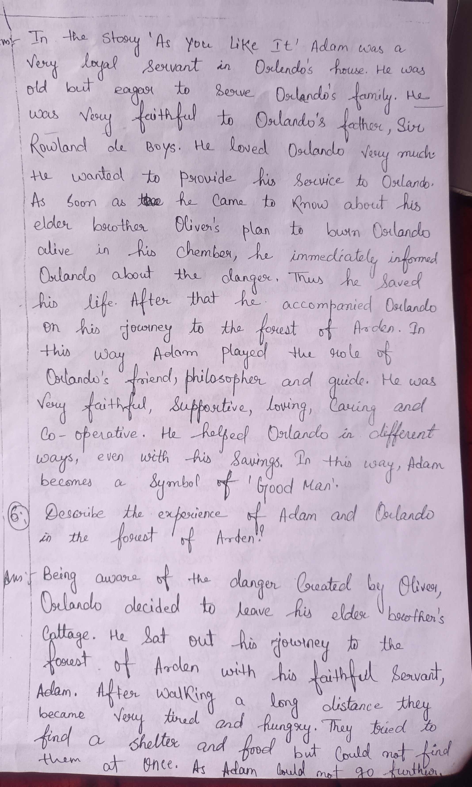
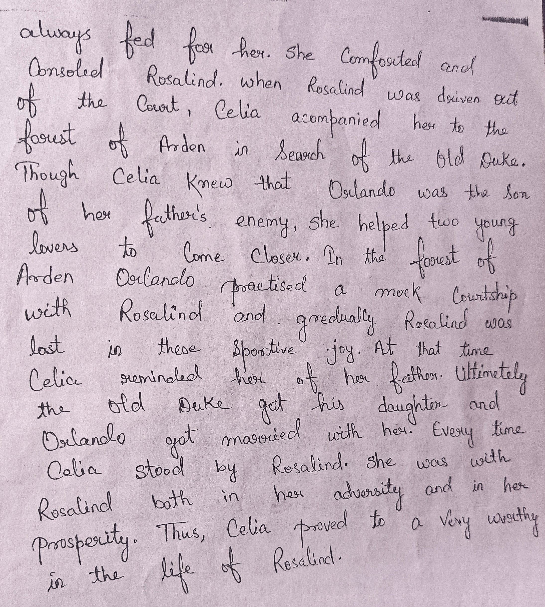
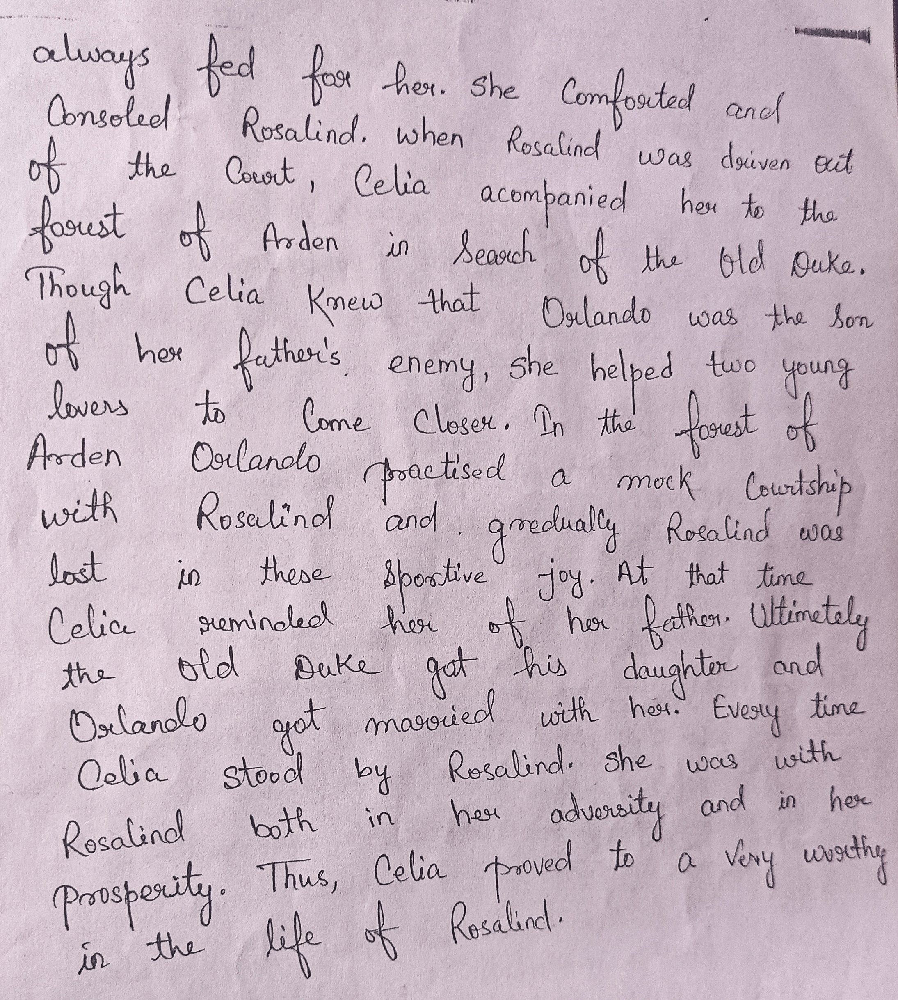
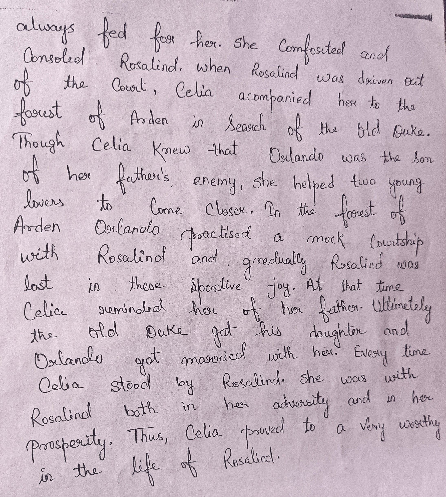
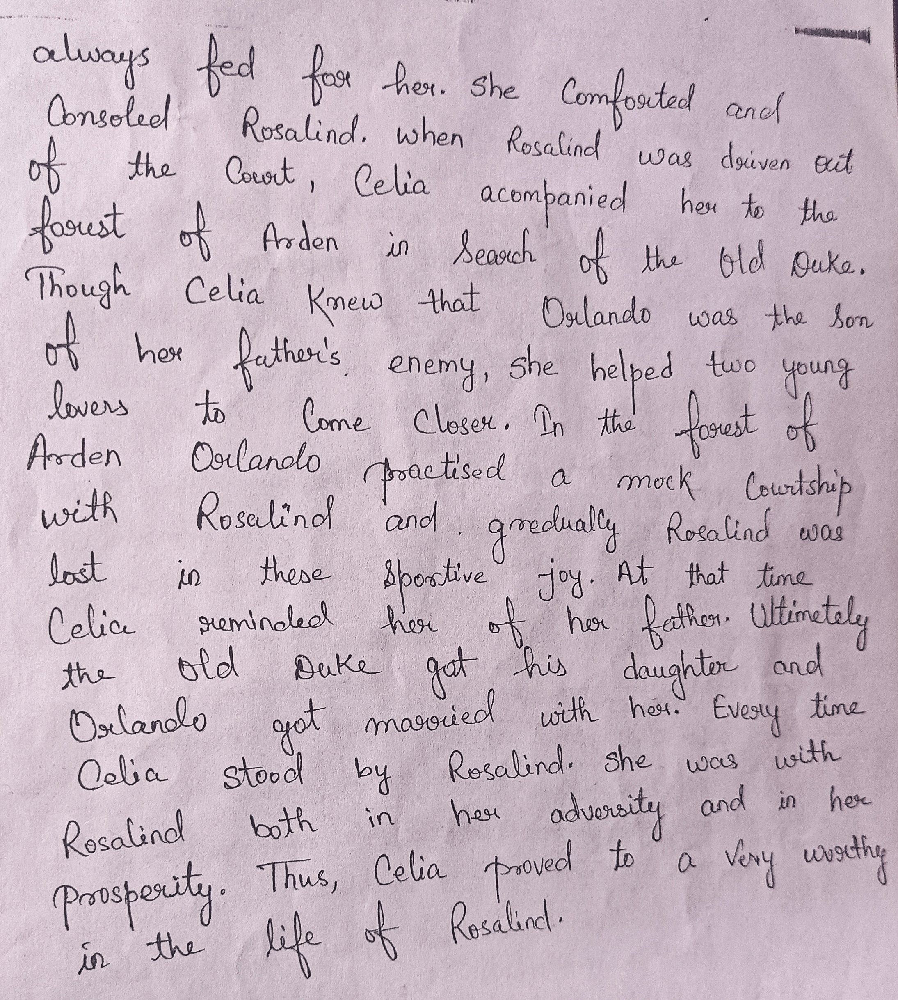
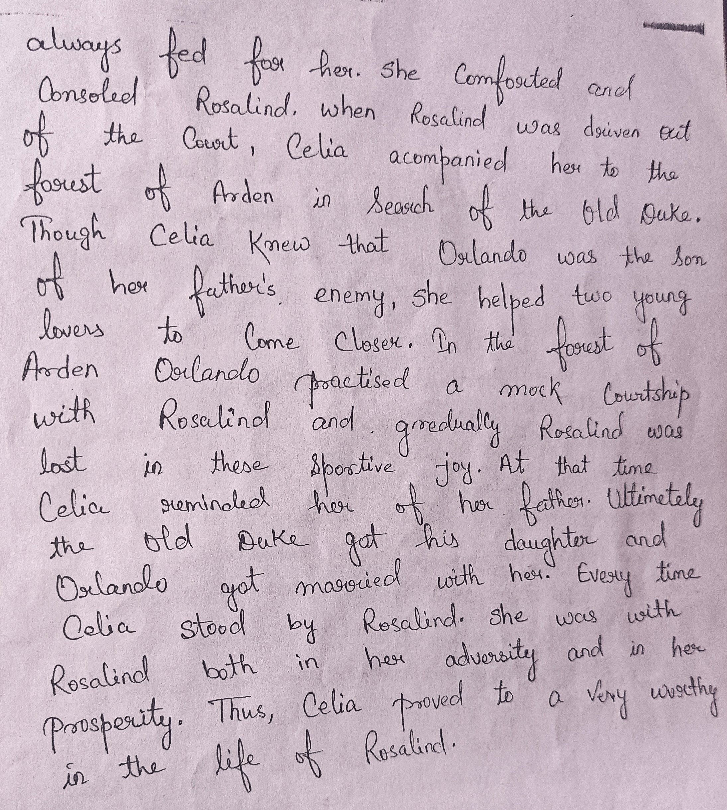

×
othelo
meeting at night
karma
As you like it
Leela's freind
Macbeth
☰
Home
about
As you like it (copy-images)
    

As you like it (written)
warning! it may be wrong spellings send feedback for wrong spellings
written version of as you like it will come soon !


 


